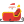

<link rel="import" href="../../components/polymer/polymer.html">
<link rel="import" href="../../elements/i18n-msg.html">
<link rel="import" href="bubble-overlay.html">

<link rel="import" href="../../js/utils.html">
<script src="../shared/js/mapstyles.js"></script>

<!--
Intro for the tracker scene.

@element tracker-intro
-->
<polymer-element name="tracker-intro" attributes="userLocation santaLocation santaDistance"
                 on-transitionend="{{goesOffScreen}}"
                 on-webkitTransitionEnd="{{goesOffScreen}}">
<template>
  <style>
  /* Outside of tracker-intro.scss because it requires shimming. */
  :host {
    width: 100%;
    height: 100%;
    display: block;
    position: relative;
    transition: transform 0.3s ease;
    z-index: 3; /* higher than rest of tracker */
  }
  </style>
  <link rel="stylesheet" href="tracker-intro.css" no-shim>

  <div id="tracker-intro-module">
    <bubble-overlay id="overlay" opacity="1" color="#13AB27">
      <canvas-bubble id="userBubble" x="{{userBubbleCenterX_}}" y="{{winCenterY_}}"></canvas-bubble>
      <canvas-bubble id="santaBubble" x="{{santaBubbleCenterX_}}" y="{{winCenterY_}}"></canvas-bubble>
    </bubble-overlay>

    <div class="top" id="top">
      <p class="welcome">
        <i18n-msg msgid="tracker_intro_welcome">PLACEHOLDER_i18n</i18n-msg></a>
      </p>
      <p class="title">
        <i18n-msg msgid="santatracker">PLACEHOLDER_i18n</i18n-msg>
      </p>
    </div>

    <div class="pin-wrapper" id="pinWrapper">
      
    </div>

    <div id="santaPath">
      
    </div>

    <div id="santaSleigh">
      
    </div>

    <div id="userMap">
      <div id="userMapInner"></div>
    </div>

    <div class="bottom-wrapper">
      <div class="user-location" id="userLocation">
        <p class="info">
          <i18n-msg msgid="tracker_intro_user_location">PLACEHOLDER_i18n</i18n-msg>
          <br>
          <em>{{userLocation.name}}</em>
        </p>
      </div>

      <div class="santa-distance" id="santaDistance">
        <p>Santa is {{santaDistance | formatDistance_}} away</p>
      </div>
    </div>

    <div class="skip">
      <a href="{{pageUrl}}#" on-click="{{closeIntro}}"><i18n-msg msgid="tracker_intro_skip_intro">PLACEHOLDER_i18n</i18n-msg></a>
    </div>
  </div>

</template>
<script>
(function() {

  var BUBBLE_RADIUS_BIG = 100;
  var BUBBLE_RADIUS_SMALL = 60;

  Polymer({
    /**
     * Name and coords of the user's location.
     *
     * @attribute userLocation
     * @type Object
     * @default null
     */
    userLocation: null,

    /**
     * Santa's location.
     *
     * @attribute santaLocation
     * @type Object
     * @default null
     */
    santaLocation: null,

    /**
     * Santa's distance from the user when the page loads.
     *
     * @attribute santaDistance
     * @type number
     * @default null
     */
    santaDistance: null,

    /**
     * window center point.
     *
     * @private
     * @type number
     * @default 0
     */
    winCenterX_: 0,

    /**
     * window center point.
     *
     * @private
     * @type number
     * @default 0
     */
    winCenterY_: 0,

    /**
     * The space between two opened bubbles in pixels.
     *
     * @type number
     * @default 0
     */
    bubbleOffset: 0,

    /**
     * Santa's bubble center point.
     *
     * @private
     * @type number
     * @default 0
     */
    santaBubbleCenterX_: 0,

    /**
     * User's bubble center point.
     *
     * @private
     * @type number
     * @default 0
     */
    userBubbleCenterX_: 0,

    created: function() {
      this.calculateLayoutValues_();
    },

    domReady: function() {
      this.updateLayout_();
    },

    attached: function() {
      this.resizeHandler_ =  this.resize_.bind(this);
      window.addEventListener('resize',  this.resize_.bind(this));
    },

    detached: function() {
      window.removeEventListener('resize', this.resizeHandler_);
      this.resizeHandler_ = null;
    },

    updateLayout_: function() {
      this.$.pinWrapper.style.left = this.userBubbleCenterX_ + 'px';
      this.$.userMap.style.left = this.userBubbleCenterX_ + 'px';
      this.$.santaSleigh.style.left = this.santaBubbleCenterX_ + 'px';
      this.$.pinWrapper.style.top = this.winCenterY_ + 'px';
      this.$.santaSleigh.style.top = this.winCenterY_ + 'px';
      this.$.userMap.style.top = this.winCenterY_ + 'px';
      this.$.santaPath.style.left = this.userBubbleCenterX_ + 30 + 'px';
      this.$.santaPath.style.top = this.winCenterY_ + 'px';
    },

    calculateLayoutValues_: function() {
      var isUserBubbleCentered = this.userBubbleCenterX_ === this.winCenterX_;
      this.bubbleOffset = Math.max(Math.floor(window.innerWidth / 8), 90);
      this.winCenterX_ = Math.floor(window.innerWidth / 2);
      this.winCenterY_ = Math.floor(window.innerHeight / 2);
      this.santaBubbleCenterX_ = this.winCenterX_ + this.bubbleOffset;
      this.userBubbleCenterX_ = isUserBubbleCentered ?
          this.winCenterX_ : this.winCenterX_ - this.bubbleOffset;
    },

    resize_: function() {
      this.calculateLayoutValues_();
      this.updateLayout_();
      if (this.$.santaPath.shown_) {
        this.$.santaPath.style.width = 2 * this.bubbleOffset - 80 + 'px';
      }
      this.$.overlay.draw();
    },

    clipMap_: function(el, bubble) {
      var rect = el.getBoundingClientRect();
      el.style.clip = 'rect(0px ' + (bubble.x +
        bubble.radius - rect.left) / bubble.scale + 'px auto ' +
      (bubble.x - bubble.radius - rect.left) / bubble.scale + 'px)';
    },

    translateMap_: function(el, bubble, icon) {
      var stepX = bubble.x - bubble.originX;
      var stepY = bubble.y - bubble.originY;
      var scale = bubble.scale;

      if (stepX || stepY || bubble.scale !== 1) {
        var transform = 'scale(' + scale + ')';
        el.style.transform = el.style.webkitTransform = transform;
        icon.style.transform = icon.style.webkitTransform = transform;

        icon.style.left = el.style.left = bubble.x + 'px';
        icon.style.top = el.style.top = bubble.y + 'px';
      }
    },

    formatDistance_: function(dist) {
      return formatDistance(dist);
    },

    bindMapToBubble_: function(el, bubble, icon) {
      // Compensate for a left and top overflow if present.
      var rect = el.getBoundingClientRect();
      var transformOrigin = (bubble.bubble.originX - rect.left) + 'px ' +
                            (bubble.bubble.originY - rect.top) + 'px';
      el.style.transformOrigin = el.style.webkitTransformOrigin =transformOrigin;

      bubble.addEventListener(Bubble.EventType.RESIZE, function(e) {
        this.clipMap_(el, e.target.bubble);
      }.bind(this));
      bubble.addEventListener('translate', function(e) {
        this.translateMap_(el, e.target.bubble, icon);
      }.bind(this));
    },

    userLocationChanged: function() {
      if (this.layoutReady_ && ! this.map_) {
        this.setupUserMap_();
      }
    },

    layoutReady: function() {
      this.layoutReady_ = true;

      if (this.userLocation) {
        this.setupUserMap_();
      }
    },

    setupUserMap_: function() {
      this.map_ = new google.maps.Map(this.$.userMapInner, {
        center: new google.maps.LatLng(
            this.userLocation.location.lat,
            this.userLocation.location.lng),
        zoom: 8,
        disableDefaultUI: true,
        scrollwheel: false,
        draggable: false,
        disableDoubleClickZoom: true,
        backgroundColor: '#fff',
        styles: mapstyles.styles
      });

      this.bindMapToBubble_(this.$.userMap, this.$.userBubble, this.$.pin.parentNode);

      google.maps.event.addListener(
        this.map_, 'idle', function(){
          this.showUserLocationMap();
        }.bind(this));
    },

    /**
     * Plays intro title animation sequence.
     *
     * @method showTitle
     */
    showTitle: function() {
      this.async(function() {
        this.$.top.classList.add('final');
      }, null, 300);
    },

    /**
     * Plays user's location animation sequence.
     *
     * @method showUserLocationMap
     */
    showUserLocationMap: function() {
      var bubble = this.$.userBubble;
      var pin = this.$.pin;
      var userLocationEl = this.$.userLocation;

      this.$.top.classList.add('final'); // 300ms
      this.async(function() {
        bubble.open(140, function(e) {
          bubble.open(100, function() {
            userLocationEl.classList.add('final');
            pin.style.webkitTransform = 'rotate(0deg)';
            pin.style.transform = 'rotate(0deg)';
            this.async(function() {
              this.showSanta();
            }, null, 1500);
          }.bind(this));
        }.bind(this));
      }, null, 300);
    },

    /**
     * Plays user's location animation sequence.
     *
     * @method showUserLocationMap
     */
    showSanta: function() {
      var bubble = this.$.userBubble;
      var santaBubble = this.$.santaBubble;

      var santaSleigh = this.$.santaSleigh;
      var santaPath = this.$.santaPath;

      bubble.move(this.winCenterX_ - this.bubbleOffset,
          this.winCenterY_, BUBBLE_RADIUS_SMALL, function() {
        santaSleigh.style.zIndex = 3;
        santaPath.shown_ = true;
        santaPath.style.left = this.userBubbleCenterX_ + 30 + 'px';
        santaPath.style.width = 2 * this.bubbleOffset - 80 + 'px';
        this.async(function() {
          this.resize_();
          santaBubble.open(100);
          this.async(function() {
           this.closeIntro(); // Remove intro screen after 4s.
          }, null, 4000);
        }, null, 800);

      }.bind(this));
      this.$.userLocation.classList.remove('final');
      this.$.santaDistance.classList.add('final');
    },

    /**
     * Hides the intro from view.
     *
     * @method closeIntro
     */
    closeIntro: function(e, detail, sender) {
      e && e.preventDefault();
      this.style.transform = this.style.webkitTransform = 'translateY(-' + 2 * this.winCenterY_ + 'px)';
      this.classList.add('offscreen');
    },

    /**
     * Removes this element entirely from DOM.
     *
     * @method destroy
     */
    destroy: function() {
      this.$.userBubble.bubble.destroy();
      this.$.santaBubble.bubble.destroy();
      this.parentNode.removeChild(this);
    },

    goesOffScreen: function(e, detail, sender) {
      if (sender.classList.contains('offscreen')) {
        this.destroy();
      }
    }
  });
})();
</script>
</polymer-element>
